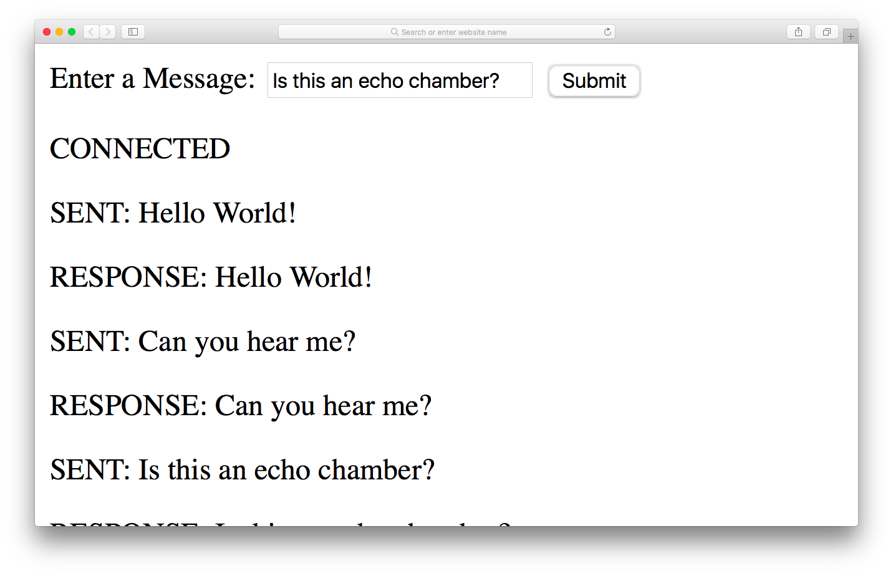

Create a function that found the factor of a given number.
It take a long time to find the factors of a large number
This web page has a button that will change the background of the page
it’s impossible to click on the 'Change Color' button while the factors are being calculated ― the whole program freezes until the operation is complete:
We start by preventing the form from being submitted, then display a message that says 'This could take a while ...'. This message is displayed until the worker returns a result. To do that we add a new web worker.
When the number has been factorized, the worker will send a message back to say it has finished.
Now if we test the code, it will still take a long time to factorize a long number, but the page will not freeze. You can also continue to change the background color while the factors are being calculated in the background:
If you want to try it Click here
Websocket is a new protocol that allows two-way communication with a server – also known as push messaging. This means that a connection is kept open and responses are ‘pushed’ to the client as soon as they are received.
Trying to do the example of the book, I found some problems tat I cannot solved. I research the issues but I was not able to make it work.
This is the image of how it is supposed to look like
Here are screenshots of how looks like and the issues:
If you want to try it Click here
The Notification API allows you to show messages using the system's notifications. This is usually a popup in the corner of the screen, but it changes depending on the operating system. An advantage of using the system notification is that they will still be displayed even if the web page that calls them isn't the current tab.
In the following picture we see how a notification is displayed:
In the the following picture the function is supose to produce a system notification with the title 'Hello JavaScript!'.
The issue I found is that the state is pending: